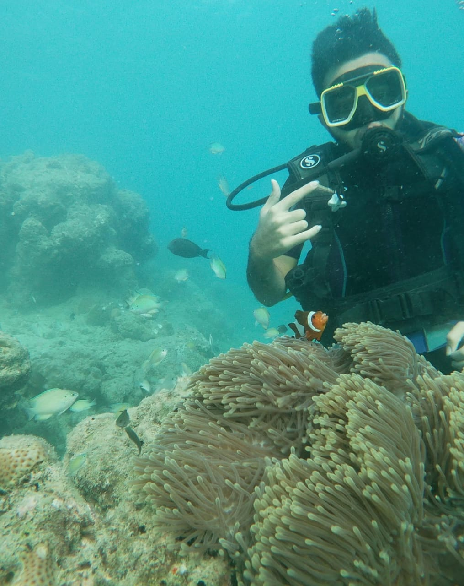
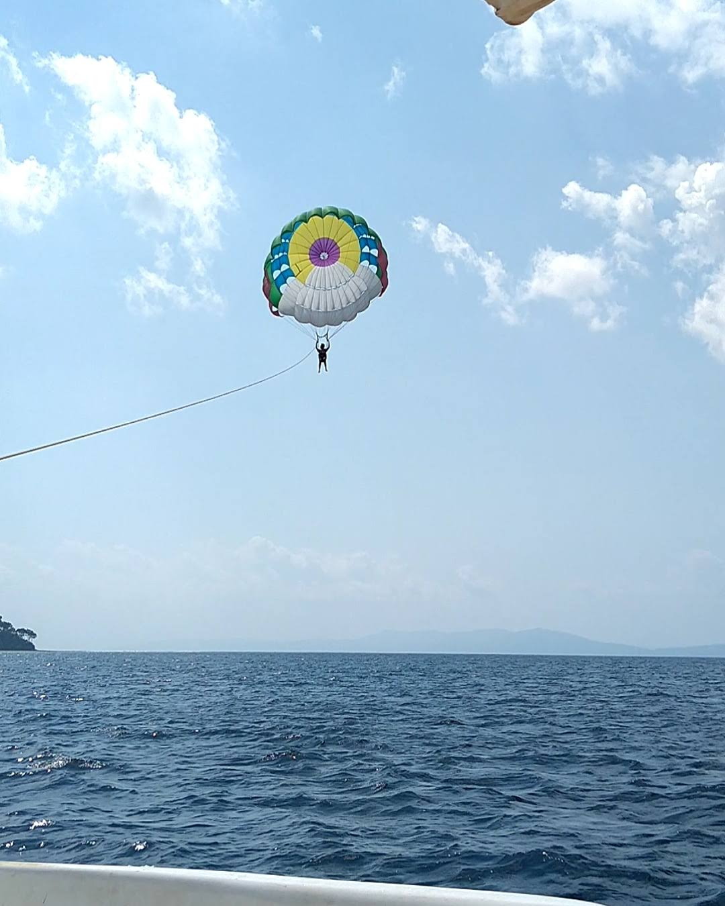
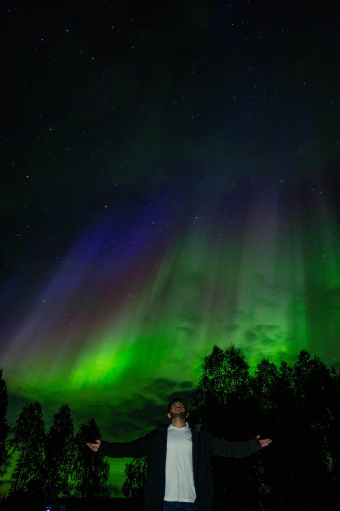
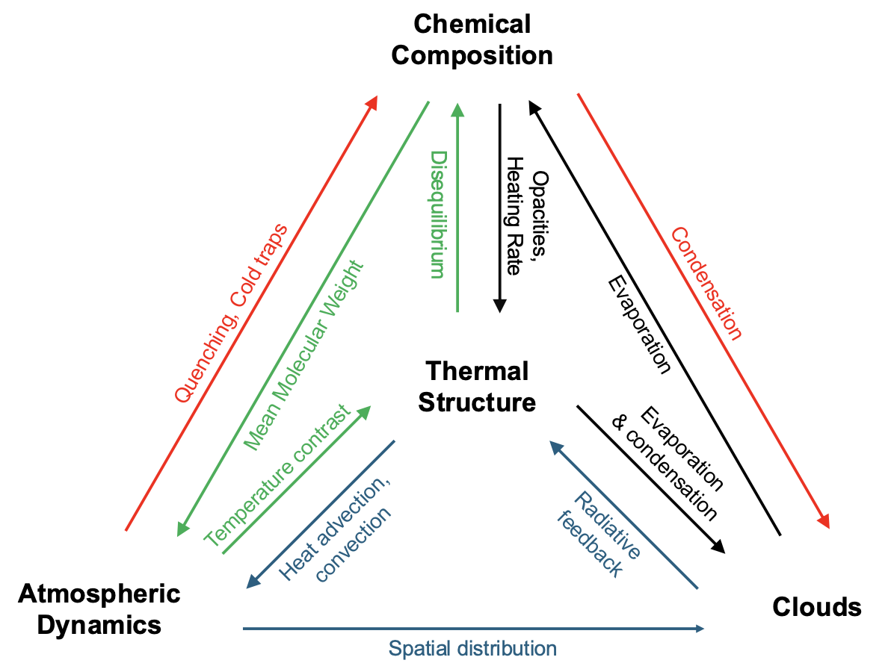

About
Research Focus: Decoding the three-dimensional atmospheric dynamics of exoplanets through state-of-the-art General Circulation Models and JWST spectroscopy, bridging the gap between observations and physical understanding.
I am a PhD candidate at Université Côte d'Azur, working at the Observatoire de la Côte d'Azur within CNRS Laboratoire Lagrange, France. Under the supervision of Vivien Parmentier and Tristan Guillot, I specialize in three-dimensional atmospheric modeling of exoplanets.
My research leverages the ADAM (SPARC/MITgcm) framework to construct sophisticated 3D atmospheric models that generate synthetic spectra for direct comparison with JWST and other observational data. This approach reveals the complex atmospheric circulation patterns, temperature structures, and cloud distributions of distant worlds from ultra-hot Jupiters to temperate sub-Neptunes. Learn more about my research methodology.

Academic Background
I earned my BS-MS Dual Degree from the Indian Institute of Science Education and Research, Thiruvananthapuram, majoring in Physics with a minor in Data Science. My interdisciplinary training combines theoretical astrophysics with computational and machine learning techniques.
Minor Thesis: Applied unsupervised machine learning algorithms to characterize gamma-ray burst emission properties, resulting in a first-author publication in The Astrophysical Journal.
Master's Thesis: Developed a comprehensive astrobiology model for Archean Earth-analog planets to investigate detectable biosignature gases in early planetary atmospheres.
Throughout my undergraduate and master's studies, I received the prestigious INSPIRE (Innovation in Scientific Pursuit for Inspired Research) Scholarship awarded by India's Department of Science and Technology for academic excellence.
Science Communication & Outreach
I founded and led Parsec, the astronomy club at IISER-TVM, organizing public outreach events, observing sessions, and educational workshops to inspire the next generation of scientists. Visit our website to learn more.
Beyond Astronomy




As a competitive inline skater, I proudly represented India at international competitions organized by the World Slalom Skating Association, competing in China and Thailand where I secured 3rd place. This experience taught me discipline, perseverance, and the value of pushing boundaries, qualities I bring to my research.
Research
Core Philosophy: Exoplanets are three-dimensional worlds with complex atmospheric dynamics. One-dimensional models, while computationally efficient, fail to capture the full richness of atmospheric circulation, day-night temperature contrasts, and cloud formation processes. General Circulation Models (GCMs) are essential for accurately interpreting observations and understanding the physics governing these alien atmospheres.

Image credit: [Anuthi Tiwary, Siddhi Dhalawat, Nishil Mehta]

Planets are 3D!
Video credit: T. Mikal-Evans (MPIA) / T. Müller (MPIA/HdA)
Methodology: 3D Atmospheric Simulations

I employ the ADAM (SPARC/MITgcm) code suite, a cutting-edge atmospheric modeling framework that has been validated across a diverse range of exoplanetary regimes:
- Hot Jupiters — Modeling extreme day-night temperature contrasts, equatorial jets, and atmospheric heat redistribution
- Warm Jupiters — Exploring the transition zone between hot and temperate giant planets
- Sub-Neptunes & Mini-Neptunes — Investigating atmospheric composition and cloud physics in hydrogen-rich envelopes
The ADAM framework integrates the MITgcm dynamical core with sophisticated radiative transfer calculations, solving the primitive equations of atmospheric motion on a cube-sphere grid. This enables self-consistent modeling of global circulation, radiative heating/cooling, and phase-dependent observables.

Simulated temperature distribution across atmospheric pressure levels

Atmospheric circulation patterns and wind dynamics
Credit: D. Spiegel | Related work: Burrows et al. (2010)
JWST MANATEE Collaboration
I am a contributing member of MANATEE (MIRI And NIRCam Assay for the Transmission and Emission of Exoplanets), a JWST Guaranteed Time Observations program conducting comprehensive atmospheric characterization across transmission and emission spectroscopy. Our team leverages multi-instrument observations to constrain atmospheric composition, thermal structure, and cloud properties.

Research Impact
My work combines theoretical modeling with cutting-edge observational data to address fundamental questions: What governs atmospheric circulation on tidally locked worlds? How do clouds form and evolve? What can atmospheric spectra tell us about planet formation and migration history? By bridging theory and observation, I aim to advance our understanding of planetary atmospheres beyond our solar system.
Publications
Peer-Reviewed Publications
Ashtari, R., et al., including Mehta N.
The Astronomical Journal, 171 215
JWST emission spectroscopy reveals global carbon chemistry and longitudinal asymmetries in the atmosphere of ultra-hot Neptune LTT-9779b, despite thick cloud coverage.
Mehta N. et al.
Astronomy & Astrophysics, 707, A394 (2026)
Three-dimensional GCM simulations reveal how cloud feedback mechanisms influence observable spectra and atmospheric dynamics of warm Jupiter WASP-80b, interpreting JWST observations.
Wiser, L., et al., including Mehta N.
Proceedings of the National Academy of Sciences, 122 (39) e2416193122
Achieved precision in atmospheric metallicity and carbon-to-oxygen ratio measurements using panchromatic JWST emission spectroscopy of a warm giant planet.
Murphy, M., et al., including Mehta N.
The Astronomical Journal, 170 61 (2024)
Comprehensive analysis reveals significant compositional and cloud property differences between morning and evening terminators of sub-Neptune WASP-107b using JWST observations.
Ohno, K., et al., including Mehta N.
The Astrophysical Journal Letters, 979 L7 (2025)
JWST panchromatic transmission spectroscopy suggests a metal-enriched atmospheric composition beneath the persistent aerosol layers of enigmatic mini-Neptune GJ-1214b.
Schlawin, E., et al., including Mehta N.
The Astrophysical Journal Letters, 974 L33 (2024)
First tentative detection of carbon dioxide absorption features above the thick aerosol deck of GJ-1214b, probing atmospheric chemistry in unexplored pressure regimes.
Schlawin, E., et al., including Mehta N.
The Astronomical Journal, 168 104 (2024)
Panchromatic JWST emission spectroscopy reveals multiple independent signatures of dayside aerosols and horizontal temperature gradients across WASP-69b's atmosphere.
Nishil Mehta and Shabnam Iyyani
The Astrophysical Journal, 969 88 (2024)
First Author
Machine Learning
Applied unsupervised machine learning clustering algorithms to characterize emission properties and identify distinct subclasses in a large sample of gamma-ray bursts from Fermi and BATSE missions.